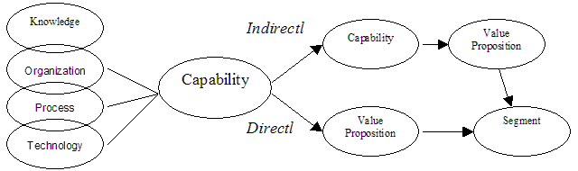
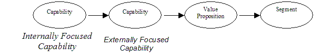
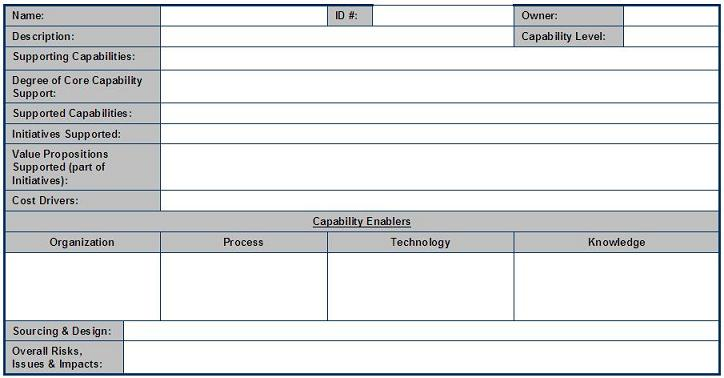

| Artifact: Capability Description (BUS 414) |
 |
|
| This work product defines and documents existing and new business capabilities. The information in a Capability Description is necessary for a variety of subsequent analyses including assessing capabilities, identifying the leverage across a set of new business initiatives, identifying extra-firm sourcing, refining business model design, defining the business models that can implement a new business initiative and other kinds of analyses. |
| Parent Deliverables | ||
|---|---|---|
| Main Description | A Capability identifies any combination of knowledge, organization, process, and technology (Capability Enablers/Resources or KOPT) [We will use the shorthand KOPT to refer to these in the remainder of this document]. Also note, Capability Enabler and Resource both refer to KOPT.) that enables a firm (or business unit) to deliver a specific value proposition directly to a defined segment [A Segment is defined as a collection of firms or individuals that have similar wants and needs from the perspective of the focal (client’s) firm.] of stakeholders, e.g., customer segment or supplier segment, or indirectly through the support of other capabilities.  The internal components of a given capability can vary from firm to firm. For example, several firms may be observed to be capable of delivering the same value propositions; therefore, each of these firms may be described as having the same capability. When analyzed in more detail and compared across firms, each of these firms may have developed or configured a very different set of KOPT in its own unique capability. This identifies an important use and characteristic of capabilities: they provide a scheme whereby the similarities across firms or business models can be identified while the details of the differences among firms can be preserved. More specifically, a capability’s title provides a label for a firm’s collection of specific KOPT commissioned to support the delivery of specific value propositions. These labels or titles should be assigned so as to allow for identification of similarities. The capability description adds the details of a particular firm’s KOPT, identifying more detailed similarities and differences among specific capabilities that each support the delivery of the same value propositions. Since in subsequent analyses we may need to know those capabilites which directly support value propositions, we refer to these as Externally Focused Capabilities. These Capabilites are externally focused and directly support a value proposition to one or more segments. Capabilites that indirectly support value propositions through other capabilites are referred to as Internally Focused Capabilities. These capabilites are internally focused and support other capabilities. Occassionally, capabilities will be observed to support value propositions directly and support value propositions through other capabilities. These capabilities are labeled as both External Focused and Internally Focused.  Capabilities are usually described in the format: For example: "Ability to access information" Examples of capabilities that enable all major Value Net Players [A Value Net Player is defined as one of the following - Customer, Supplier, Competitor/Substitute or Complementor]. For more information on Value Nets, refer to the Value Exchange Technique Paper:
Numerous combinations of KOPT can deliver capabilities as indicated by the diversity in management systems, skills, intellectual capital, organizational design and process implementations across firms. In general, there is no "one-way" of delivering a capability. Indeed, there may be no "best-way" of delivering a capability for all firms. What is best for any given firm may depend to a large degree on the other capabilities (and supporting KOPT) that are available in that firm. This flexibility is part of the strength of using capabilities versus other more detailed and specific representations. The primary advantages of Capabilities are:
In the most simplistic usage, capabilities identify the essential components of a proposed new business initiative. In this instance, the minimal description of a capability is needed, including only the value produced and not requiring the details of its Capability Enablers (KOPT). If additional information on the Capability Enablers (KOPT) is available, it should be captured during the current task or later in follow-on tasks. In general, many analyses involving capabilities will employ the details describing the Capability Enablers. The most detailed capability descriptions contains information about Capability Enablers including:
|
||||||||||||||||||||||||||||||||||||||||||||||||||||||||||||
|---|---|---|---|---|---|---|---|---|---|---|---|---|---|---|---|---|---|---|---|---|---|---|---|---|---|---|---|---|---|---|---|---|---|---|---|---|---|---|---|---|---|---|---|---|---|---|---|---|---|---|---|---|---|---|---|---|---|---|---|---|---|
| Brief Outline | There are a numerous attributes of a capability that can be identified or developed and documented. The following table describes the attributes, some of which are optional.

The optimal way of capturing capability information and its attributes is with a relational database. This will enable faster access and changes with far fewer errors. |
| Examples |
|---|
Since capabilities can be described at varying levels of detail, it is important to understand what subsequent analyses will be performed with the capabilities and their descriptions. This should dictate the level and detail of the description. For example, capabilities identified during an e-Design engagement will normally comprise a far more detailed description of a firm or business initiative than those defined for a strategy engagement. The difference in detail arises because when we are working to define an e-business strategy, we are interested in the commonality and differentiation among a set of e-business initiatives. In this situation, we need only identify the most obvious and most significant capabilities that comprise the initiatives. However, when we are optimizing the design of one of those initiatives, it is necessary to work from a much more detailed decomposition of an initiative into its constituent capabilities. When defining capabilities for a firm, confusion can arise over the level of detail at which the capabilities should be defined. The capability, “Ability to generate awareness” describes a very general characteristic of most firms. In contrast, “Ability to access market demographics” is a more detailed capability that often appears in support of the former capability. It need not be identified unless it also supports other capabilities. The level detail of the capability should be dictated by the needs of the engagement and the agreed to scope. Obviously, the more general capabilities can be identified far easier than the more detailed capabilities. A careful review of identified capabilities, whether new or existing, should be performed to ensure that a “common level” has been achieved.
Describing capabilities should be an iterative process. As stated above, a capability may be described at a
high-level during the initial activities within a strategy (sufficient amount of detail to make the relevant decisions)
and then further refined and described in later activities and fully detailed during e-Design (to support the design
and eventual implementation of a supported initiative). |
| Impact of not having | The impact of not having this work product could be one of the following:
|
|---|---|
| Reasons for not needing | The work product may not be needed if the client has already performed an equivalent analysis (with or without IBM) and is able to share the results. However, in most cases clients operate at a process level and do not usually have documented capabilities. |
| Checklists | |
|---|---|
| Guidelines | |
| Supporting Materials | |
| Estimation Considerations |
| © Copyright IBM Corp. 1987, 2012 All Rights Reserved Property of IBM These materials are intended only for use as part of an IBM engagement |